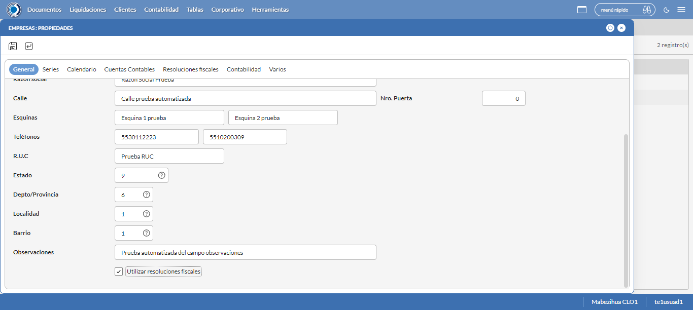

Desarrollado por : Area de Testing PWST
Fecha y hora de inicio : 2022-09-28 13:01:21
Duracion : 0:11:07.749356
Resultado : Total 8，Correctos 8 ，Taza de resultado 100.00%
Resumen 100.00% Errores 0 Fallidos 0 Correctos 8 Test realizados 8
| Caso de Prueba | Total | Correctos | Fallido | Error | Detalles | Captura del error |
| Empresas.Test: Escenario 1 de Empresas | 8 | 8 | 0 | 0 | Detalles | |
test |
pt1_1: 2022-09-28 13:01:23,162 - root - INFO - Se abre el chrome
2022-09-28 13:01:24,490 - root - INFO - Entra a la URL
2022-09-28 13:01:24,652 - root - INFO - Maximiza la pantalla
2022-09-28 13:01:27,693 - root - INFO - Cambia al frame
|
|
||||
test_000: Ingresa a la base de datos |
pt1_2: 2022-09-28 13:01:30,772 - root - INFO - Escribe el usuario
2022-09-28 13:01:30,872 - root - INFO - Escribe la contraseña
2022-09-28 13:01:31,010 - root - INFO - Se dio clic en el boton ingresar
2022-09-28 13:01:31,881 - root - INFO - Ejecutar Enterprise
2022-09-28 13:01:35,965 - root - INFO - Cambia entre pestañas
|
|
||||
test_001: Abre menu y ejecuta pantalla |
pt1_3: 2022-09-28 13:01:57,555 - root - INFO - Abre la pantalla de Empresas
2022-09-28 13:01:57,615 - root - INFO - La pantalla ejecutada es Empresas
2022-09-28 13:02:00,615 - root - INFO - Captura: C:\xampp\htdocs\Versiones\automatizaciones\AutoPWST\01EMP\report\img screen：20220928_13_02_00.png
2022-09-28 13:02:00,824 - root - INFO - Se presiona el boton 'Nuevo', para crear un nuevo registro.
|
|||||
test_002: Abre la ventana de nuevo y crear un registro |
pt1_4: 2022-09-28 13:02:05,902 - root - INFO - Se abrio la pantalla para el ingreso de un registro nuevo.
2022-09-28 13:02:05,932 - root - INFO - El campo 'Codigo' si se encuentra visible.
2022-09-28 13:02:05,962 - root - INFO - El campo 'Descrición' si se encuentra visible.
2022-09-28 13:02:06,002 - root - INFO - El campo 'Codigo Alternativo' si se encuentra visible.
2022-09-28 13:02:06,032 - root - INFO - El campo 'Codigo GLN' si se encuentra visible.
2022-09-28 13:02:06,082 - root - INFO - El campo 'Razón social' si se encuentra visible.
2022-09-28 13:02:06,112 - root - INFO - El campo 'Calle' si se encuentra visible.
2022-09-28 13:02:06,152 - root - INFO - El campo 'Esquinas' si se encuentra visible.
2022-09-28 13:02:06,182 - root - INFO - El campo 'Teléfonos' si se encuentra visible.
2022-09-28 13:02:06,212 - root - INFO - El campo 'R.U.C' si se encuentra visible.
2022-09-28 13:02:06,242 - root - INFO - El campo 'Estado' si se encuentra visible.
2022-09-28 13:02:06,282 - root - INFO - El campo 'Depto/Provincia' si se encuentra visible.
2022-09-28 13:02:06,312 - root - INFO - El campo 'Localidad' si se encuentra visible.
2022-09-28 13:02:06,342 - root - INFO - El campo 'Barrio' si se encuentra visible.
2022-09-28 13:02:06,387 - root - INFO - El campo 'Observaciones' si se encuentra visible.
2022-09-28 13:02:06,416 - root - INFO - El campo 'Resoluciones Fiscales' si se encuentra visible.
2022-09-28 13:02:06,446 - root - INFO - El campo 'Nro. Puerta' si se encuentra visible.
2022-09-28 13:02:06,522 - root - INFO - Ingresa el codigo del nuevo registro
2022-09-28 13:02:09,736 - root - INFO - Ingresa la descripción del nuevo registro
2022-09-28 13:02:12,881 - root - INFO - Ingresa el codigo alternativo del nuevo registro
2022-09-28 13:02:16,012 - root - INFO - Ingresa el codigo GLN del nuevo registro
2022-09-28 13:02:19,179 - root - INFO - Ingresa la Razón Social del nuevo registro
2022-09-28 13:02:22,343 - root - INFO - Ingresa la calle del nuevo registro
2022-09-28 13:02:25,504 - root - INFO - Ingresa la esquina 1 del nuevo registro
2022-09-28 13:02:28,665 - root - INFO - Ingresa la esquina 2 del nuevo registro
2022-09-28 13:02:31,825 - root - INFO - Ingresa el Telefono 1 del nuevo registro
2022-09-28 13:02:34,981 - root - INFO - Ingresa el Telefono 2 del nuevo registro
2022-09-28 13:02:38,142 - root - INFO - Ingresa el ruc del nuevo registro
2022-09-28 13:02:48,631 - root - INFO - Se dió doble click en el registro de Estado.
2022-09-28 13:02:59,064 - root - INFO - Se dió doble click en el registro de Depto/Provincia.
2022-09-28 13:03:09,501 - root - INFO - Se dió doble click en el registro de Localidad.
2022-09-28 13:03:19,930 - root - INFO - Se dió doble click en el registro de Barrio.
2022-09-28 13:03:23,144 - root - INFO - Ingresa las Observaciones del nuevo registro
2022-09-28 13:03:26,248 - root - INFO - Se dió click en el checkbox Resoluciones Fiscales.
2022-09-28 13:03:29,254 - root - INFO - Captura: C:\xampp\htdocs\Versiones\automatizaciones\AutoPWST\01EMP\report\img screen：20220928_13_03_29.png
2022-09-28 13:03:29,451 - root - INFO - Ingresa el Num de la puerta del nuevo registro
2022-09-28 13:03:32,557 - root - INFO - Se hace el cambio a la pestaña Series para continuar con el registro nuevo
2022-09-28 13:03:35,655 - root - INFO - Se presiona el boton 'Nuevo', para crear un nuevo registro de Series.
2022-09-28 13:03:40,718 - root - INFO - El campo 'Código' si se encuentra visible.
2022-09-28 13:03:40,748 - root - INFO - El campo 'Descripción' si se encuentra visible.
2022-09-28 13:03:40,788 - root - INFO - El campo 'Codigo alternativo' si se encuentra visible.
2022-09-28 13:03:40,844 - root - INFO - Ingresa el Codigo del nuevo registro
2022-09-28 13:03:44,060 - root - INFO - Ingresa la Descripcion del nuevo registro
2022-09-28 13:03:47,198 - root - INFO - Ingresa el Codigo alternativo del nuevo registro
2022-09-28 13:03:50,299 - root - INFO - Se hace el cambio a la pestaña Configuración Vias para continuar con el registro nuevo
2022-09-28 13:03:53,430 - root - INFO - Se presiona el boton 'Nuevo', para crear un nuevo registro de Configuración Vias.
2022-09-28 13:03:58,527 - root - INFO - El campo 'Tipo Documento' si se encuentra visible.
2022-09-28 13:03:58,567 - root - INFO - El campo 'Vías en BackOffice' si se encuentra visible.
2022-09-28 13:03:58,597 - root - INFO - El campo 'Vías en Mobile' si se encuentra visible.
2022-09-28 13:03:58,637 - root - INFO - El campo 'Descrpción de vías' si se encuentra visible.
2022-09-28 13:03:58,692 - root - INFO - Ingresa el Tipo Documento del nuevo registro
2022-09-28 13:04:01,824 - root - INFO - Ingresa las Vias Backoffice del nuevo registro
2022-09-28 13:04:04,949 - root - INFO - Ingresa las Vias Mobile del nuevo registro
2022-09-28 13:04:08,100 - root - INFO - Ingresa la Descripción Vias del nuevo registro
2022-09-28 13:04:11,212 - root - INFO - Se presiona el boton 'Guardar', para guardar el registro de Configuracion Vias .
2022-09-28 13:04:16,346 - root - INFO - Se presiona el boton 'Guardar', para guardar el registro de Serie.
2022-09-28 13:04:21,446 - root - INFO - Se hace el cambio a la pestaña Calendario para continuar con el registro nuevo
2022-09-28 13:04:24,525 - root - INFO - El campo 'Lunes' si se encuentra visible.
2022-09-28 13:04:24,565 - root - INFO - El campo 'Martes' si se encuentra visible.
2022-09-28 13:04:24,605 - root - INFO - El campo 'Miércoles' si se encuentra visible.
2022-09-28 13:04:24,635 - root - INFO - El campo 'Jueves' si se encuentra visible.
2022-09-28 13:04:24,665 - root - INFO - El campo 'Viernes' si se encuentra visible.
2022-09-28 13:04:24,705 - root - INFO - El campo 'Sábado' si se encuentra visible.
2022-09-28 13:04:24,735 - root - INFO - El campo 'Domingo' si se encuentra visible.
2022-09-28 13:04:24,812 - root - INFO - Se dió click en el checkbox Lunes.
2022-09-28 13:04:27,907 - root - INFO - Se dió click en el checkbox Martes.
2022-09-28 13:04:31,039 - root - INFO - Se dió click en el checkbox Miercoles.
2022-09-28 13:04:34,135 - root - INFO - Se dió click en el checkbox Jueves.
2022-09-28 13:04:37,259 - root - INFO - Se dió click en el checkbox Viernes.
2022-09-28 13:04:40,372 - root - INFO - Se dió click en el checkbox Sabado.
2022-09-28 13:04:43,487 - root - INFO - Se hace el cambio a la pestaña Contabilidad para continuar con el registro nuevo
2022-09-28 13:04:46,549 - root - INFO - El campo 'Período Contable' si se encuentra visible.
2022-09-28 13:04:46,579 - root - INFO - El campo 'Desde' si se encuentra visible.
2022-09-28 13:04:46,619 - root - INFO - El campo 'Hasta' si se encuentra visible.
2022-09-28 13:04:46,762 - root - INFO - Ingresa la fecha Desde del nuevo registro
2022-09-28 13:04:49,979 - root - INFO - Ingresa la fecha Hasta del nuevo registro
2022-09-28 13:04:53,092 - root - INFO - Se da clic en el boton Guardar; se debe crear un nuevo registro.
|
 | ||||
test_003: Repetir el registro creado anteriormente |
pt1_5: 2022-09-28 13:04:58,184 - root - INFO - Se presiona el boton 'Refrescar', para crear un nuevo registro igual al anterior.
2022-09-28 13:05:03,287 - root - INFO - Se presiona el boton 'Nuevo', para crear un nuevo registro igual al anterior.
2022-09-28 13:05:08,358 - root - INFO - Se abrio la pantalla para el ingreso de un registro nuevo.
2022-09-28 13:05:08,417 - root - INFO - Ingresa el codigo del nuevo registro
2022-09-28 13:05:11,644 - root - INFO - Ingresa la descripción del nuevo registro
2022-09-28 13:05:14,776 - root - INFO - Ingresa el codigo alternativo del nuevo registro
2022-09-28 13:05:17,928 - root - INFO - Ingresa el codigo GLN del nuevo registro
2022-09-28 13:05:21,109 - root - INFO - Ingresa la Razón Social del nuevo registro
2022-09-28 13:05:24,278 - root - INFO - Ingresa la calle del nuevo registro
2022-09-28 13:05:27,435 - root - INFO - Ingresa la esquina 1 del nuevo registro
2022-09-28 13:05:30,577 - root - INFO - Ingresa la esquina 2 del nuevo registro
2022-09-28 13:05:33,716 - root - INFO - Ingresa el Telefono 1 del nuevo registro
2022-09-28 13:05:36,863 - root - INFO - Ingresa el Telefono 2 del nuevo registro
2022-09-28 13:05:40,032 - root - INFO - Ingresa el ruc del nuevo registro
2022-09-28 13:05:50,505 - root - INFO - Se dió doble click en el registro de Estado.
2022-09-28 13:06:00,968 - root - INFO - Se dió doble click en el registro de Depto/Provincia.
2022-09-28 13:06:11,412 - root - INFO - Se dió doble click en el registro de Localidad.
2022-09-28 13:06:21,855 - root - INFO - Se dió doble click en el registro de Barrio.
2022-09-28 13:06:25,071 - root - INFO - Ingresa las Observaciones del nuevo registro
2022-09-28 13:06:28,146 - root - INFO - Se dió click en el checkbox Resoluciones Fiscales.
2022-09-28 13:06:31,153 - root - INFO - Captura: C:\xampp\htdocs\Versiones\automatizaciones\AutoPWST\01EMP\report\img screen：20220928_13_06_31.png
2022-09-28 13:06:31,393 - root - INFO - Ingresa el Num de la puerta del nuevo registro
2022-09-28 13:06:34,498 - root - INFO - Se hace el cambio a la pestaña Contabilidad para continuar con el registro nuevo
2022-09-28 13:06:37,679 - root - INFO - Ingresa la fecha Desde del nuevo registro
2022-09-28 13:06:40,840 - root - INFO - Ingresa la fecha Hasta del nuevo registro
2022-09-28 13:06:43,948 - root - INFO - Se da clic en el boton Guardar; NO se debe crear un nuevo registro.
2022-09-28 13:06:48,953 - root - INFO - Captura: C:\xampp\htdocs\Versiones\automatizaciones\AutoPWST\01EMP\report\img screen：20220928_13_06_48.png
2022-09-28 13:06:49,170 - root - INFO - Se presiona el boton 'Cerrar', para cerrar el mensaje de duplicidad de llave primaria
2022-09-28 13:06:52,281 - root - INFO - Se presiona el boton 'Cerrar', para cerrar la ventana
|
|||||
test_004: Modificar el registro |
pt1_6: 2022-09-28 13:06:56,412 - root - INFO - Se presiona el boton 'Refrescar', para proceder a modificar el registro.
2022-09-28 13:07:06,038 - root - INFO - Se da clic en el registro creado, para proceder a modificarlo.
2022-09-28 13:07:09,291 - root - INFO - Se modifica el contenido del campo Descripción
2022-09-28 13:07:12,451 - root - INFO - Se modifica el contenido del campo Codigo Alternativo
2022-09-28 13:07:15,629 - root - INFO - Se modifica el contenido del campo Codigo GLN
2022-09-28 13:07:18,866 - root - INFO - Se modifica el contenido del campo Razón Social
2022-09-28 13:07:22,043 - root - INFO - Se modifica el contenido del campo Calle
2022-09-28 13:07:25,212 - root - INFO - Se modifica el contenido del campo Esquina 1
2022-09-28 13:07:28,384 - root - INFO - Se modifica el contenido del campo Esquina 2
2022-09-28 13:07:31,595 - root - INFO - Se modifica el contenido del campo telefono 1
2022-09-28 13:07:34,793 - root - INFO - Se modifica el contenido del campo telefono 2
2022-09-28 13:07:37,978 - root - INFO - Se modifica el contenido del campo RUC
2022-09-28 13:07:48,443 - root - INFO - Se dió doble click en el registro de Estado.
2022-09-28 13:07:58,820 - root - INFO - Se dió doble click en el registro de Depto/Provincia.
2022-09-28 13:08:09,240 - root - INFO - Se dió doble click en el registro de Localidad.
2022-09-28 13:08:19,676 - root - INFO - Se dió doble click en el registro de Barrio.
2022-09-28 13:08:22,974 - root - INFO - Se modifica el contenido del campo Observaciones
2022-09-28 13:08:26,047 - root - INFO - Se dió click en el checkbox Resoluciones Fiscales.
2022-09-28 13:08:29,050 - root - INFO - Captura: C:\xampp\htdocs\Versiones\automatizaciones\AutoPWST\01EMP\report\img screen：20220928_13_08_29.png
2022-09-28 13:08:29,282 - root - INFO - Se modifica el contenido del campo Num de Puerta
2022-09-28 13:08:32,353 - root - INFO - Se hace el cambio a la pestaña Series para continuar con la modificación del registro
2022-09-28 13:08:39,928 - root - INFO - Se da clic en el registro de Series, para proceder a modificarlo.
2022-09-28 13:08:43,132 - root - INFO - Se modifica el contenido del campo Descripción
2022-09-28 13:08:46,298 - root - INFO - Se modifica el contenido del campo Codigo Alternativo
2022-09-28 13:08:49,376 - root - INFO - Se hace el cambio a la pestaña Configuración de Vías para continuar con la modificación del registro
2022-09-28 13:08:56,941 - root - INFO - Se da clic en el registro de Configuración Vías, para proceder a modificarlo.
2022-09-28 13:09:00,109 - root - INFO - Se modifica el contenido del campo Tipo Documento
2022-09-28 13:09:03,249 - root - INFO - Se modifica el contenido del campo Vías Backoffice
2022-09-28 13:09:06,402 - root - INFO - Se modifica el contenido del campo Vías Mobile
2022-09-28 13:09:09,554 - root - INFO - Se modifica el contenido del campo Descripción
2022-09-28 13:09:12,623 - root - INFO - Se presiona el boton 'Guardar', para guardar la modificación del registro de Configuración Vías.
2022-09-28 13:09:17,685 - root - INFO - Se presiona el boton 'Guardar', para guardar la modificación del registro Series.
2022-09-28 13:09:22,755 - root - INFO - Se hace el cambio a la pestaña Calendario para continuar con la modificación del registro
2022-09-28 13:09:25,825 - root - INFO - Se dió click en el checkbox Lunes.
2022-09-28 13:09:28,899 - root - INFO - Se dió click en el checkbox Miercoles.
2022-09-28 13:09:31,997 - root - INFO - Se dió click en el checkbox Sabado.
2022-09-28 13:09:35,089 - root - INFO - Se hace el cambio a la pestaña Resoluciones Fiscales para continuar con la modificación del registro
2022-09-28 13:09:38,163 - root - INFO - Se presiona el boton 'Nuevo', para crear un nuevo registro de Resoluciones Fiscales.
2022-09-28 13:09:43,194 - root - INFO - El campo 'Fecha Autorización' si se encuentra visible.
2022-09-28 13:09:43,234 - root - INFO - El campo 'Serie' si se encuentra visible.
2022-09-28 13:09:43,264 - root - INFO - El campo 'Nro. Resolución' si se encuentra visible.
2022-09-28 13:09:43,294 - root - INFO - El campo 'Rango Correlativo' si se encuentra visible.
2022-09-28 13:09:50,663 - root - INFO - Se dió doble click en el registro de Serie.
2022-09-28 13:09:53,817 - root - INFO - Ingresa el Num de la puerta del nuevo registro
2022-09-28 13:09:56,909 - root - INFO - Ingresa el Rango Inicio del nuevo registro
2022-09-28 13:10:00,000 - root - INFO - Ingresa el Rango Fin del nuevo registro
2022-09-28 13:10:03,119 - root - INFO - Se da clic en el boton Guardar; se debe guardar el registro de Resolución Fiscal.
2022-09-28 13:10:08,201 - root - INFO - Se da clic en el boton Guardar; se debe modificar la informacion del registro.
|
|||||
test_005: Eliminar el registro creado |
pt1_7: 2022-09-28 13:10:13,267 - root - INFO - Se presiona el boton 'Refrescar', para proceder a eliminar el registro.
2022-09-28 13:10:22,834 - root - INFO - Se da clic en el registro creado, para proceder a eliminarlo.
2022-09-28 13:10:25,908 - root - INFO - Se hace el cambio a la pestaña Resoluciones Fiscales para continuar con la eliminación del registro
2022-09-28 13:10:33,472 - root - INFO - Se da clic en el registro en el Registro de Resoluciones Fiscales, para proceder a modificarlo.
2022-09-28 13:10:41,547 - root - INFO - Se presiona el boton 'Eliminar', para eliminar el registro de Resoluciones Fiscales.
2022-09-28 13:10:41,612 - root - INFO - Se da clic en el boton Guardar; se debe modificar la informacion del registro.
2022-09-28 13:10:51,222 - root - INFO - Se da clic en el registro creado, para proceder a eliminarlo.
2022-09-28 13:10:54,328 - root - INFO - Se hace el cambio a la pestaña Series para continuar con la eliminación del registro
2022-09-28 13:11:01,977 - root - INFO - Se da doble click en el registro de series, para proceder a eliminarlo.
2022-09-28 13:11:05,073 - root - INFO - Se hace el cambio a la pestaña Coniguración Vias para continuar con la eliminación del registro
2022-09-28 13:11:12,684 - root - INFO - Se da clic en el registro de Configuración Vías, para proceder a modificarlo.
2022-09-28 13:11:20,788 - root - INFO - Se presiona el boton 'Eliminar', para eliminar el registro de Configuración Vías.
2022-09-28 13:11:20,899 - root - INFO - Se da clic en el boton Guardar; se debe modificar la informacion del registro Series.
2022-09-28 13:11:26,016 - root - INFO - Se da clic en el boton Guardar; se debe modificar la informacion del registro.
2022-09-28 13:11:35,627 - root - INFO - Se da clic en el registro creado, para proceder a eliminarlo.
2022-09-28 13:11:38,728 - root - INFO - Se hace el cambio a la pestaña Series para continuar con la eliminación del registro
2022-09-28 13:11:46,334 - root - INFO - Se da clic en el registro series, para proceder a eliminarlo.
2022-09-28 13:11:54,445 - root - INFO - Se presiona el boton 'Eliminar', para eliminar el registro de Series.
2022-09-28 13:11:54,536 - root - INFO - Se da clic en el boton Guardar; se debe modificar la informacion del registro.
2022-09-28 13:12:04,144 - root - INFO - Se da clic en el registro creado, para proceder a eliminarlo.
2022-09-28 13:12:12,247 - root - INFO - Se presiona el boton 'Eliminar', para eliminar el registro.
2022-09-28 13:12:12,247 - root - INFO - Captura: C:\xampp\htdocs\Versiones\automatizaciones\AutoPWST\01EMP\report\img screen：20220928_13_12_12.png
2022-09-28 13:12:12,485 - root - INFO - Se confirma el eliminado del registro
2022-09-28 13:12:17,611 - root - INFO - Se presiona el boton 'Refrescar', para verificar si el registro ha sido eliminado.
2022-09-28 13:12:22,703 - root - INFO - Se presiona el boton 'Cerrar', para cerrar la pantalla de Empresas.
|
|||||
test_006: Cerrar_Navegador |
pt1_8: 2022-09-28 13:12:29,432 - root - INFO - Se cierra chrome
|
|
||||
| Caso de prueba | 8 | 8 | 0 | 0 | Taza de resultado：100.00% | |